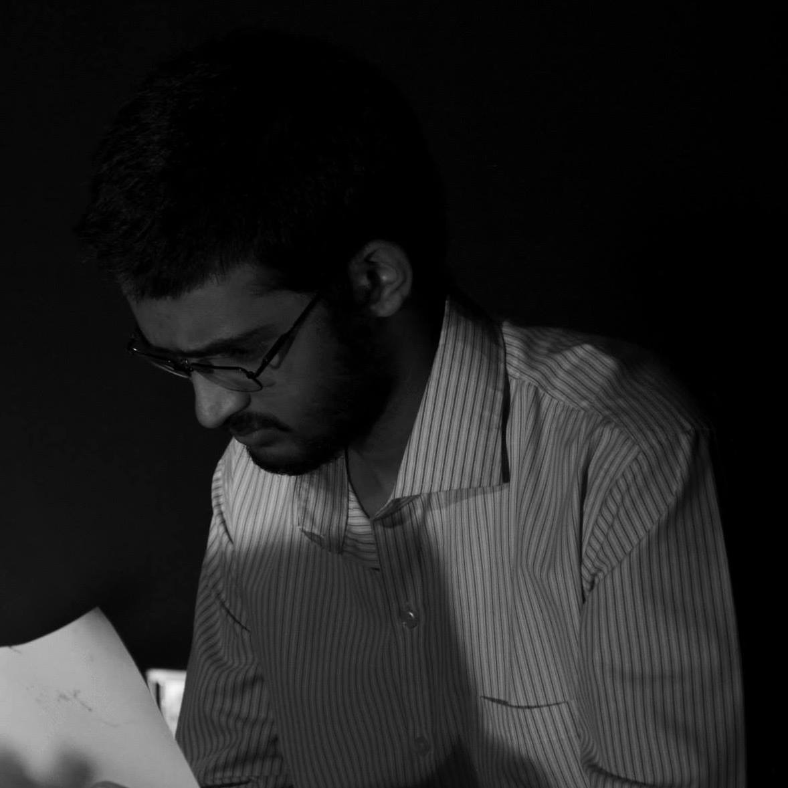

Team Members:

Dibyendu Mondal
130050046

make and the run the executable ./assign1.centroid in the file centroidFunctions.cpp finds the centroid of the object. On pressing R the centroid of the object is shifted to the origin.